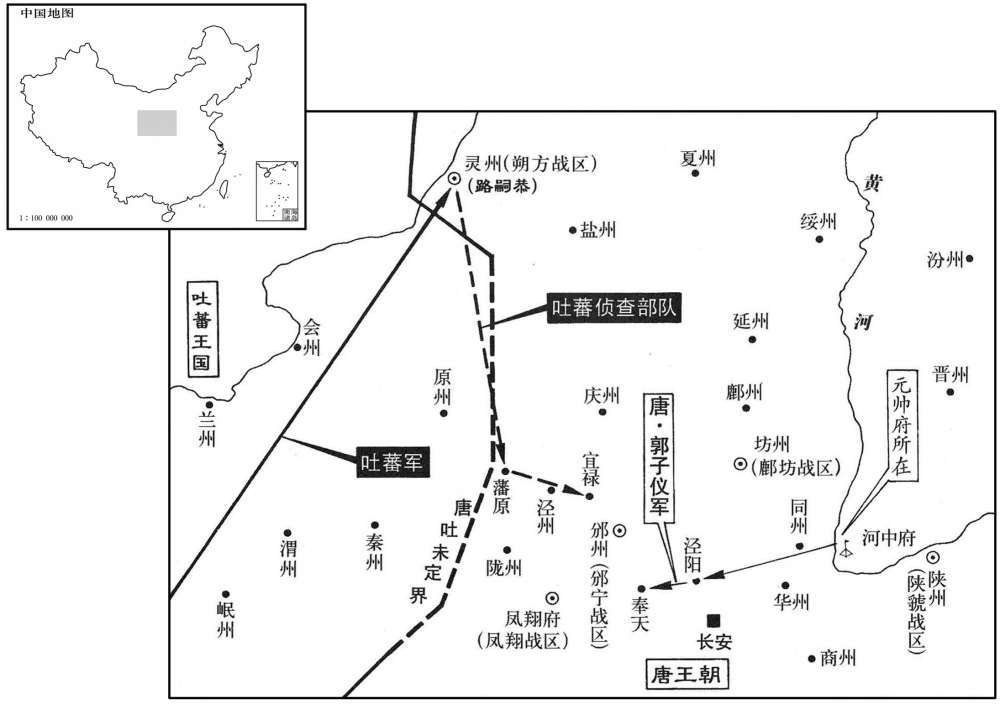

公元767年资治通鉴：本年记事、原文与白话对照
按原书编年位置阅读；追叙和史论不等于本年发生的事件。白话采用所据译本，缺译不以生成译文补齐。
卷224 · 本年记事
公元767年 · 唐代宗睿文孝武皇帝大历二年
二年〔（丁未，七六七）〕
本年事件索引（现代整理）
春，正月，丁巳，密诏郭子仪讨周智光，子仪命大将浑瑊、李怀光军于渭上；智光麾下闻之，皆有离心。己未，智光大将李汉惠自同州帅所部降于子仪。〔帅，读曰率；下同。降，户江翻。〕壬戍，贬智光澧州刺史。〔宋白曰：澧州，汉零阳县地。吴立天门郡，隋置松州，寻改澧州，州在澧水之阳，故名。旧志：州在京师东南一千八百九十三里。澧，音礼。〕甲子，华州牙将姚怀、李延俊杀智光，以其首来献。
春季，正月丁巳（初六），代宗秘密下诏让郭子仪讨伐周智光，郭子仪命令大将浑、李怀光在渭水河畔驻扎军队。周智光的部下听说后，都有心脱离周智光。己未（初八），周智光的大将李汉惠从同州率领部下向郭子仪投降。壬戌（十一日），代宗将周智光贬为沣州刺史。甲子（十三日），华州牙将姚怀、李延俊杀掉周智光，并将周智光的头颅献给朝廷。
淮西节度使李忠臣入朝，以收华州为名，帅所部兵大掠，自潼关至赤水〔水经注：渭水东过郑县北，又东与赤水合。九域志：华州郑县有赤水镇。〕二百里间，财畜殆尽，官吏有衣纸〔衣，于即翻。〕或数日不食者。己巳，置潼关镇兵二千人。
淮西节度使李忠臣入朝，他以收复华州为名，率领他的部队大肆掠夺，从潼关到赤水二百里间，财物牲畜被掠殆尽，当地官员们有的以纸当衣，有的数天没有饭吃。己巳（十八日），朝廷在潼关设置镇守部队二千人。
壬申，分剑南置东川观察使，镇遂州。〔合东、西川，见上卷广德二年。〕
壬申（二十一日），朝廷从剑南节度使中分置东川观察使，镇守遂州。
二月，丙戍，郭子仪入朝。上命元载、王缙、鱼朝恩等互置酒于其第，一会之费至十万缗。上礼重子仪，常谓之大臣而不名。
二月丙戌（初六），郭子仪入朝。代宗命令元载、王缙、鱼朝恩等人分别在他们的宅第设置酒席款待郭子仪，一次宴席花费高达十万缗。代宗对待郭子仪礼遇厚重，常常称他为大臣而不直呼其名。
郭暧尝与升平公主争言，〔永泰元年，下嫁郭暧，事见上卷。〕暧曰：「汝倚乃父为天子邪﹖我父薄天子不为！」公主恚，奔车奏之。上曰：「此非汝所知。彼诚如是，使彼欲为天子，天下岂汝家所有邪！」慰谕令归。子仪闻之，囚暧，入待罪。上曰：「鄙谚有之：〔史照曰：鄙谚，俚俗所传之言也。〕『不痴不聋，不作家翁。』儿女子闺房之言，何足听也！」子仪归，杖暧数十。
郭暧曾经与升平公主发生口角，郭暧说：“你倚仗你父亲是天子吗？我父亲是不屑于做天子！”公主怨恨，乘车飞奔入宫奏报此事。代宗说：“此事并非你所能知。他们真是这样，假使他们想要做天子，天下怎么会是你家的呢！”代宗安慰劝说一番，让公主回去。郭子仪听说此事后，将郭暧囚禁起来，自己入朝等待代宗的惩处。代宗对郭子仪说：“有一句俗话说：‘不痴不聋，当不了家长。’儿女闺房中的话，哪值得去听呢！”郭子仪回家，打了郭暧数十大棍。
夏，四月，庚子，命宰相、鱼朝恩与吐蕃盟于兴唐寺。〔命宰相及鱼朝恩也。〕
夏季，四月庚子（二十一日），代宗命令宰相及鱼朝恩在兴唐寺与吐蕃举行结盟仪式。
杜鸿渐请入朝奏事，以崔旰知西川留后。〔考异曰：旧鸿渐传云：鸿渐仍帅旰同入觐。」宁传云：「鸿渐请旰为行军司马，仍赐名宁。鸿渐归，遂授宁西川节度使。至十四年，始入朝。」实录亦无随鸿渐入朝事，鸿渐传误也。〕六月，甲戍，鸿渐来自成都，广为贡献，因盛陈利害，荐旰才堪寄任；上亦务姑息，乃留鸿渐复知政事。〔复，扶又翻。〕秋，七月，丙寅，以旰为西川节度使，杜济为东川节度使。旰厚敛以赂权贵，〔敛，力赡翻。〕元载擢旰弟宽至御史中丞，宽兄审至给事中。
杜鸿渐请求入朝奏事，让崔旰担任西川留后。六月甲戌（疑误），杜鸿渐从成都入朝，贡献了许多财物，并且竭力陈述利害关系，推荐崔旰有才干，可以寄予重任。代宗也一味姑息，于是将杜鸿渐留在朝中，再次担任宰相职位。秋季，七月丙寅（十九日），代宗任命崔旰为西川节度使，杜济为东川节度使。崔旰增加赋税的征收，以比贿赂权贵，因而元载将崔旰的弟弟崔宽提升为御史中丞，崔宽的哥哥崔审提升为给事中。
丁卯，鱼朝恩奏以先所赐庄为章敬寺〔据旧史，章敬寺在通化门外。〕以资章敬太后冥福，〔上母吴后，谥章敬。〕于是穷壮极丽，尽都市之财不足用，奏毁曲江及华清宫馆以给之，〔「财」，当作「材」。都市之材，谓材木积于都市者。长安朱雀街东第五街、皇城之东第三街升道坊龙华尼寺南，有流水屈曲，谓之曲江。此地在秦为宜春苑、隑州，在汉为乐游园；开元疏凿，遂为胜境。其南有紫云楼、芙蓉苑，其西有杏园、慈恩寺。江侧菰蒲葱翠，柳阴四合，碧波红蕖，依映可爱。华清宫见二百十五卷天宝六载。〕费逾万亿。〔孔颖达曰：亿之数有大小二法：其小数，以十为等，十万为亿，十亿为兆也；其大数，以万为等，数万至万，是万万为亿，又从亿而数至万，万亿为兆。〕卫州进士高郢上书，略曰：「先太后圣德，不必以一寺增辉；国家永图，无宁以百姓为本。舍人就寺，何福之为！」又曰：「无寺犹可，无人其可乎！」又曰：「陛下当卑宫室，以夏禹为法，而崇塔庙踵梁武之风乎！」又上书，略曰：「古之明王积善以致福；不费财以求福；修德消祸，不劳人以禳祸。今兴造急促，昼夜不息，力不逮者随以榜笞，「榜，音彭。」愁痛之声盈于道路，以此望福，臣恐不然。」又曰：「陛下回正道于内心，求微助于外物，徇左右之过计，伤皇王之大猷，臣窃为陛下惜之！」〔为，于伪翻。〕皆寝不报。〔考异曰：郢集，前书八月二十五日、后书九月十二日上。今因造寺终言之。〕
丁卯（二十日），鱼朝恩奏请将先前所赐给他的庄园改为章敬寺，为章敬太后祈求冥福。于是，鱼朝恩将章敬寺修得极其宏伟壮丽，耗尽都市的木材还不够用。又奏请拆毁曲江和华清宫的馆舍来供给修寺，费用超一万亿。卫州人进士高郢上书，大略说：“已故太后德行崇高，不必以一座寺院来增添光彩。国家要长治久安，不如以百姓的利益作为治国之本。抛弃百姓的利益去修建寺院，怎么能够祈福呢！”他又说：“没有寺院尚可，但是能够没有百姓吗！”他又说：“陛下应当效法夏禹，不看重宫室，不应该步梁武帝的后尘而崇尚塔庙。”他又上书，大略说：“古代贤明的君主做好事以致福，不劳费资财以求福，修饬德行以消除灾祸，不劳费百姓以求得免灾。如今匆忙昼夜建造寺院，对体力不支的人随意用棍杖殴打，道路上充满了愁叹哀痛的声音。这样祈福，我害怕会适得其反。”他又说：“陛下在内心回避正确的道理，而求助于佛寺这种外物，听从身边的人的错误主意，损害了帝王的宏大谋划。我暗自替陛下感到痛惜！”代宗对他的上书不作任何答复。
始，上好祠祀，未甚重佛。元载、王缙、杜鸿渐为相，三人皆好佛；缙尤甚，不食荤血，〔荤，臭菜也。血者，杀六畜而取之。好，呼到翻。〕与源渐造寺无穷。上尝问以「佛言报应，果为有无﹖」载等奏以：「国家运祚灵长，非宿植福业，何以致之！福业已定，虽时有小灾，终不能为害，所以安、史悖逆方炽而皆有子祸；〔谓安庆绪杀禄山、史朝义杀思明也。〕仆固怀恩称兵内侮，出门病死；回纥、吐蕃大举深入，不战而退：〔事并见上卷上年。〕此皆非人力所及，岂得言无报应也！」上由是深信之，常于禁中饭僧百余人；〔饭，扶晚翻。〕有寇至则令僧讲仁王经以禳之，〔所谓护国仁王经也。〕寇去则厚加赏赐。胡僧不空，官至卿监，爵为国公，出入禁闼，势移权贵，京畿良田美利多归僧寺。敕天下无得棰曳僧尼。造金阁寺于五台山，〔忻州五台县有五台山，释氏相传以为文殊道场。注详见后。〕铸铜涂金为瓦，所费巨亿；〔巨亿者，亿亿也。〕缙给中书符牒，令五台僧数十人散之四方，求利以营之。载等每侍上从容，多谈佛事，〔从，千容翻。〕由是中外臣民承流相化，皆废人事而奉佛，政刑日紊矣。〔紊，亡运翻。〕
起初，代宗喜欢祠堂祭祀，并未看重佛教。元载、王缙、杜鸿渐担任宰相，他们三人都崇信佛教。王缙信奉尤笃，他不吃荤食，与杜鸿渐无止境地修造寺院。代宗曾经问他们：“佛教所说的报应，果真有吗？”元载等人奏称：“国家能够国运长久，如果不是平素植下福业怎么可能达到呢！福业已经确定，虽然时常有些小灾小难，终究不能危害。所以安禄山、史思明反叛朝廷，正当旺盛之际，便都遭到他们儿子的杀害。仆固怀恩率军进攻朝廷，才出门就得病而死。回纥、吐蕃大举深入内地，最后不战而退，这一切都不是人的力量所能达到的，难道能说没有报应吗！”代宗因此十分崇信佛教，经常在宫中设斋，供养一百多名和尚，有敌人前来就命令和尚宣讲《护国仁王经》，来祈祷免灾，敌人撤退后就赏赐给和尚丰厚的礼物。胡人和尚不空，官做到卿监，赐爵位为国公，出入宫中，权势能左右权贵，京畿地区的良田和获利大的事业多归佛寺所有。代宗敕令天下不得鞭打和欺辱僧尼，在五台山修造金阁寺，铸造鎏金铜瓦，所耗费的资金数以亿计。王缙将中书省的文书发给和尚，命令五台山和尚数十人到全国各地去募捐集资，用来营建佛寺。元载等人每当侍奉代宗，从容闲暇时，往往谈论佛事。因此朝廷内外的官吏及百姓互相效仿、影响，都不做世人之事，而去崇奉佛教，政务刑法日益紊乱。
八月，庚辰，凤翔等道节度使、左仆射、平章事李抱玉入朝，〔李抱玉以陈郑、泽潞、凤翔等道节度使防吐蕃。〕固让仆射，言辞确至，〔确，坚也，固也。〕上许之；癸丑，又让凤翔节度使，不许。
八月庚辰（初三），凤翔等道节度使、左仆射、平章事李抱玉入朝觐见，坚持要求辞掉仆射的职务，言辞十分坚决，代宗接受了他的请求。癸丑（疑误），李抱玉又请求辞去凤翔节度使职务，代宗没有答应。
丁酉，杜鸿渐饭千僧，以使蜀无恙故也。〔饭，扶晚翻。〕
丁酉（二十日），杜鸿渐设斋供养一千名和尚，因为他出使蜀地安然无恙。
九月，吐蕃众数万围灵州，游骑至潘原、宜禄；〔潘原，本古阴盘县，天宝元年，更名潘原，属泾州。〕诏郭子仪自河中帅甲士三万镇泾阳，京师戒严。甲子，子仪移镇奉天。〔考异曰：汾阳家传：「八月十七日，吐蕃至泾西。二十七日，诏统精卒一万与马璘合攻之。」今从实录：「甲寅，寇灵州。乙卯，寇宜禄。」盖据奏到日。今从唐历。〕
九月，吐蕃军队数万人围攻灵州，流动出击的骑兵到达潘原、宜禄。代宗下诏让郭子仪从河中率领三万名士兵镇守泾阳，京师实行戒严。甲子（十七日），郭子仪移师镇守奉天。

山獠陷桂州，逐刺史李良。〔獠，鲁皓翻。〕
山獠攻陷桂州，驱逐了桂州刺史李良。
冬，十月，戊寅，朔方节度使路嗣恭破吐蕃于灵州城下，〔考异曰：唐历：「九月，吐蕃围灵武。戊申，嗣恭破吐蕃。」按长历。戊申，九月一日也。今从实录。〕斩首二千余级；吐蕃引去。
冬季，十月戊寅（初一），朔方节度使路嗣恭在灵州城下击败吐蕃军队，杀死了二千多名敌军，吐蕃军队撤退。
十二月，庚辰，盗发郭子仪父耱，捕之，不获。人以为鱼朝恩素恶子仪，疑其使之。〔恶，乌路翻。〕子仪自奉天入朝，朝廷忧其为变；子仪见上，上语及之，子仪流涕曰：「臣久将兵，不能禁暴，军士多发人耱。今日及此乃天谴，非人事也。」朝廷乃安。
十二月庚辰（初四），盗贼挖掘了郭子仪父亲的坟冢，官府搜捕，没有抓获。人们认为鱼朝恩向来讨厌郭子仪，怀疑是他派人干的。郭子仪从奉天入朝，朝廷害怕他因此背叛。郭子仪拜见代宗，代宗提到这件事，郭子仪痛哭流涕地说：“我长久带兵，却不能禁止残暴的行为，许多士兵挖掘别人的坟墓。今天挖到我的头上，这是苍天在谴责我，不关乎人事。”朝廷于是安定下来。
是岁，复以镇西为安西。〔改镇西见二百二十卷肃宗至德元载。复，扶又翻。〕
这一年，朝廷将镇西重新改为安西。
新罗王宪英卒，子干运立。
新罗王金宪英去世，他的儿子金乾运继承王位。